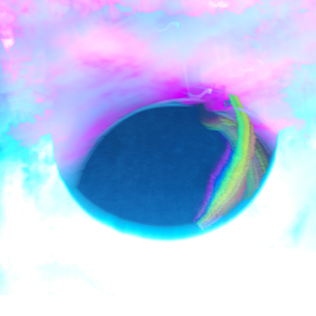
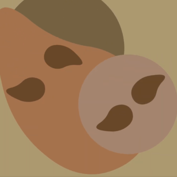
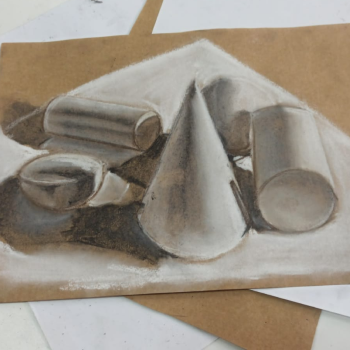

Plantas en el invierno
Algunas plantas, para evitar que sus células se congelen, reducen su contenido de agua y producen azúcares que actúan como un anticongelante natural. Este proceso evita que se rompan por el frío, pero a su vez, las hace más frágiles físicamente en ese estado.
Bienvenidos a mi mundo


Bienvenido/a. En la quietud del invierno, florece la fuerza que nos permite renacer. Soy Gema Condori, estudiante de Diseño Digital, y mi trabajo es el reflejo de una búsqueda interior. Aquí comparto el camino que recorro, mis proyectos y las cosas que me inspiran. Te invito a explorar mi mundo creativo, un lugar donde la introspección y la resiliencia dan vida a cada trazo.
Conoce Más Sobre Mi Personalidad
Mi yo Frágil
Como el hielo delgado sobre un río: bello, pero fácil de romper. Esta cualidad me recuerda que la creatividad, en su forma más pura, es delicada y requiere cuidado.
Mi yo Fria
Como la neblina que cubre todo y no deja ver el sol. Esta característica me lleva a la introspección, un estado de quietud que me permite observar y entender el mundo antes de crear.
Mi yo Resiliente
Como un árbol que, aun sin hojas en pleno invierno, mantiene raíces firmes y espera la primavera. Esta es la fuerza que me impulsa a perseverar en cada proyecto, a aprender de cada desafío y a renacer con nuevas ideas.
Mi yo Compasiva
Como un rayo de sol que se filtra en el invierno, brindando calor y claridad. Esta cualidad me permite entender las historias y necesidades de otros para crear diseños que sean verdaderamente humanos y significativos.
Un Poco de Mis Trabajos
Trabajos Destacados
5
5
Estos son los trabajos de los que me siento más orgullosa. Cada uno es el resultado de un desafío que me propuse resolver con propósito. Te invito a ver mi proceso creativo, desde las ideas iniciales que surgen en mi "invierno emocional" hasta el resultado final. Son mis historias de crecimiento contadas a través del diseño.
Conoce másTrabajos de Animación
5
5
Mi pasión por la animación se refleja en esta sección. Aquí verás cómo doy vida a las ideas y conceptos. Cada motion graphic o video corto es el resultado de mi resiliencia y dedicación. La animación es una prueba de que la paciencia y el esfuerzo pueden convertir lo estático en algo dinámico y lleno de vida.
Conoce másTrabajos de Ilustración
5
5
Esta es la parte más frágil y personal de mi portafolio. Mis ilustraciones son un reflejo directo de mis pensamientos, emociones y de mi mundo interior. En cada una de ellas, encontrarás un pedazo de mi alma. Las ilustraciones son un recordatorio de que la inspiración puede venir de cualquier lugar y que incluso mis momentos de quietud pueden dar lugar a algo hermoso.
Conoce más